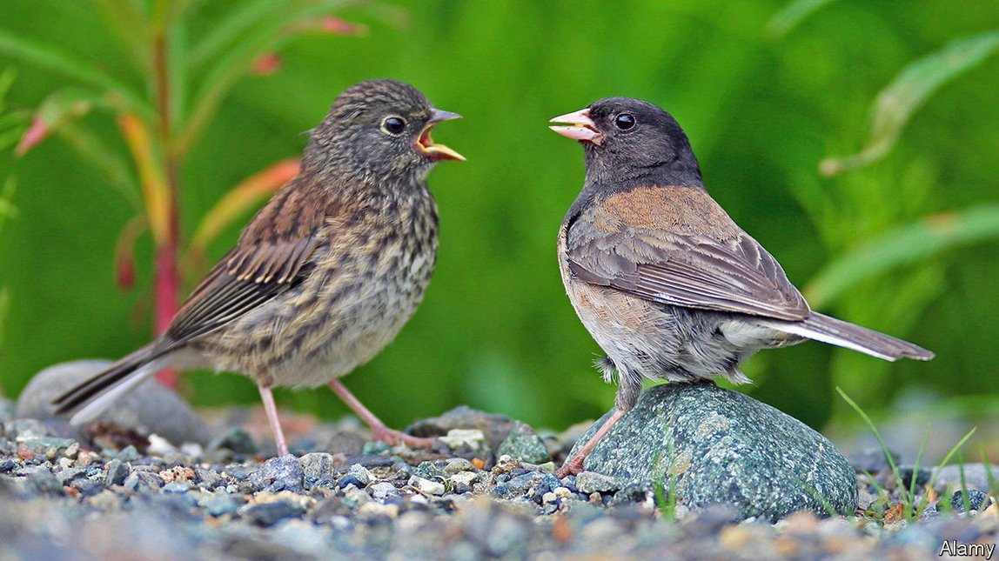

2021-09-28T15:07:52+00:00
Climate change and evolution
气候变化与进化
氣候變化與進化
The effects of a warmer world are visible in animals’ bodies
从动物形貌的变化看全球变暖
從動物形貌的變化看全球變暖
Hundreds of species show signs of adapting to a warming climate
成百上千个物种显现出适应气候变暖的迹象
成百上千個物種顯現出適應氣候變暖的跡象
FOR HUMANS, adapting to climate change will mostly be a matter of technology. More air conditioning, better-designed houses and bigger flood defences may help ameliorate the effects of a warmer world. Animals will have to rely on changing their bodies or their behaviour. In a paper published in Trends in Ecology & Evolution, a team led by Sara Ryding, a PhD candidate at Deakin University, in Australia, shows that is already happening. Climate change is already altering the bodies of many animal species, giving them bigger beaks, limbs and ears.
对人类来说，适应气候变化将主要依靠技术手段。使用更多空调、设计更好的房屋、建设更大规模的防洪设施——这些手段可能有助于减轻全球变暖带来的影响。动物就只能靠改变自己的身体或行为来适应了。在发表于《生态学与进化趋势》（Trends in Ecology & Evolution）上的一篇论文中，澳大利亚迪肯大学（Deakin University）的博士研究生萨拉·瑞丁（Sara Ryding）带领的研究团队指出，这种情况已经在发生。气候变化已经改变了许多动物种类的体型体貌，使它们演化出了更大的喙、四肢和耳朵。
對人類來說，適應氣候變化將主要依靠技術手段。使用更多空調、設計更好的房屋、建設更大規模的防洪設施——這些手段可能有助於減輕全球變暖帶來的影響。動物就只能靠改變自己的身體或行為來適應了。在發表於《生態學與進化趨勢》（Trends in Ecology & Evolution）上的一篇論文中，澳大利亞迪肯大學（Deakin University）的博士研究生薩拉·瑞丁（Sara Ryding）帶領的研究團隊指出，這種情況已經在發生。氣候變化已經改變了許多動物種類的體型體貌，使它們演化出了更大的喙、四肢和耳朵。
In some species of Australian parrot, for instance, beak size has increased by between 4% and 10% since 1871. Another study, this time in North American dark-eyed juncos, another bird, found the same pattern. Similar trends are seen in mammals, with species of mice, shrews and bats evolving bigger ears, tails, legs and wings.
例如，自1871年以来，某些种属的澳大利亚鹦鹉的喙已经增大了4%至10%。另一项对北美黑眼灯芯草雀的研究也发现了同样的情况。类似的趋势也出现在哺乳动物身上，小鼠、鼩鼱和蝙蝠等物种进化出了更大的耳朵、尾巴、腿和翅膀。
例如，自1871年以來，某些種屬的澳大利亞鸚鵡的喙已經增大了4%至10%。另一項對北美黑眼燈芯草雀的研究也發現了同樣的情況。類似的趨勢也出現在哺乳動物身上，小鼠、鼩鼱和蝙蝠等物種進化出了更大的耳朵、尾巴、腿和翅膀。
All that dovetails nicely with evolutionary theory. “Allen’s rule”, named for Joel Asaph Allen, who suggested it in 1877, holds that warm-blooded animals in hot places tend to have larger appendages than those in temperate regions. Such adaptations boost an animal’s surface area relative to its body volume, helping it to shed excess heat. Being richly endowed with blood vessels, and not covered by insulating feathers, beaks make an ideal place for birds to dispose of heat. Fennec foxes, meanwhile, which are native to the Sahara desert, have strikingly large ears, especially compared with their Arctic cousins.
所有这些都与进化论高度吻合。乔尔·阿萨夫·艾伦（Joel Asaph Allen）在1877年提出的“艾伦法则”认为，生活在炎热地区的温血动物往往比温带地区的温血动物有更大的躯体延伸部位。这种适应表现增加了动物相对于自身身体体积的体表面积，有利于释放多余的热量。喙上有丰富的血管，又没有保温的羽毛覆盖，是鸟类散热的理想部位。又比如，原产于撒哈拉沙漠的耳廓狐有着大得惊人的耳朵，与它们的北极表亲形成强烈对比。
所有這些都與進化論高度吻合。喬爾·阿薩夫·艾倫（Joel Asaph Allen）在1877年提出的“艾倫法則”認為，生活在炎熱地區的溫血動物往往比溫帶地區的溫血動物有更大的軀體延伸部位。這種適應表現增加了動物相對於自身身體體積的體表面積，有利於釋放多餘的熱量。喙上有豐富的血管，又沒有保溫的羽毛覆蓋，是鳥類散熱的理想部位。又比如，原產於撒哈拉沙漠的耳廓狐有着大得驚人的耳朵，與它們的北極表親形成強烈對比。
Ms Ryding examined museum specimens, comparing their bodies to those of their modern counterparts. She is not the first researcher to take that approach. But it is hard, when dealing with individual species, to prove that climate change was the cause of an anatomical alteration. All sorts of other factors, from changes in prey to the evolving reproductive preferences of males or females, might conceivably have been driving the changes.
瑞丁研究了博物馆的标本，将它们的身体与现代同类做比较。她并不是第一个采用这种方法的研究人员。但在研究单个物种时，很难证明气候变化是身体结构改变的原因。这是因为还有其他各种各样的因素也可能引发这些变化，从猎物的变化，到雄性或雌性不断演变的繁殖偏好等。
瑞丁研究了博物館的標本，將它們的身體與現代同類做比較。她並不是第一個採用這種方法的研究人員。但在研究單個物種時，很難證明氣候變化是身體結構改變的原因。這是因為還有其他各種各樣的因素也可能引發這些變化，從獵物的變化，到雄性或雌性不斷演變的繁殖偏好等。
Looking at the bigger picture makes the pattern clearer, says Ms Ryding. Her team combined data from different species in different places. Since they have little in common apart from living on a warming planet, she says, climate change is the most plausible explanation.
瑞丁表示，从更宏观的角度能够更清晰地看出变化规律。她的团队汇总了来自不同地区的不同物种的数据。她说，这些生物除了共同生活在一个正在变暖的星球上之外，几乎没有共同点，所以气候变化是最可信的解释。
瑞丁表示，從更宏觀的角度能夠更清晰地看出變化規律。她的團隊匯總了來自不同地區的不同物種的數據。她說，這些生物除了共同生活在一個正在變暖的星球上之外，幾乎沒有共同點，所以氣候變化是最可信的解釋。
For now, at least, the increase is small, never much more than 10%. That may change as warming accelerates. Since any evolutionary adaptation comes with trade-offs, it is unclear how far the process might go. Bigger beaks might interfere with feeding, for instance. Larger wings are heavier, and bigger legs cost more energy to grow.
至少在目前看来，这类身体面积的增幅还很小——没有明显超过10%的。随着气候变暖的加速，这或许会改变。由于任何进化适应都伴随着取舍和代价，尚不清楚这个过程会发展到何种程度。例如，更大的喙可能会妨碍进食。更大的翅膀会更重，而长出更大的腿需要耗费更多能量。
至少在目前看來，這類身體面積的增幅還很小——沒有明顯超過10%的。隨着氣候變暖的加速，這或許會改變。由於任何進化適應都伴隨着取捨和代價，尚不清楚這個過程會發展到何種程度。例如，更大的喙可能會妨礙進食。更大的翅膀會更重，而長出更大的腿需要耗費更多能量。
And there are other ways to adapt, too. Researchers have already seen changes in the geographical range of many species, from insects to fish. Another evolutionary rule-of-thumb, Bergmann’s rule, holds that animals in hotter places tend to have smaller bodies, another way to boost the ratio between surface area and volume. Other animals may alter their behaviour as well as their bodies, such as by seeking shelter at hot times of the day.
还有其他的适应方式。研究人员已经发现，从昆虫到鱼类的许多物种的地域分布都发生了变化。另一个进化论的经验法则伯格曼法则（Bergmann’s rule）认为，生活在炎热地区的动物往往个头更小，这是另一种提高体表面积与体积之比的方法。还有些动物在改变身体的同时也在改变行为，比如在一天中的炎热时段寻找遮蔽。
還有其他的適應方式。研究人員已經發現，從昆蟲到魚類的許多物種的地域分布都發生了變化。另一個進化論的經驗法則伯格曼法則（Bergmann’s rule）認為，生活在炎熱地區的動物往往個頭更小，這是另一種提高體表面積與體積之比的方法。還有些動物在改變身體的同時也在改變行為，比如在一天中的炎熱時段尋找遮蔽。
Studying a broader range of animals will help firm up exactly what is happening. Much of Ms Ryding’s data concern birds, with less information available for other taxa. But it seems clear that the world of the future is not just going to be hotter than humans are used to. The animals living in it will look different, too. ■
把更多种类的动物纳入研究将有助于确定到底发生了什么。瑞丁的大部分数据都来自鸟类，其他物种的信息较少。但是很显然，未来的世界不仅会让人类感觉更炎热。生活在其中的动物的模样也会变得不一样。
把更多種類的動物納入研究將有助於確定到底發生了什麼。瑞丁的大部分數據都來自鳥類，其他物種的信息較少。但是很顯然，未來的世界不僅會讓人類感覺更炎熱。生活在其中的動物的模樣也會變得不一樣。